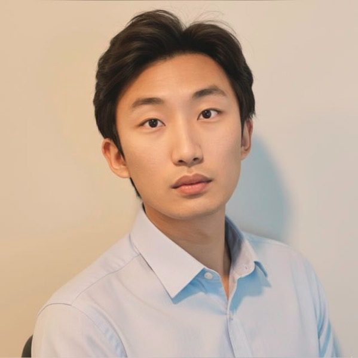
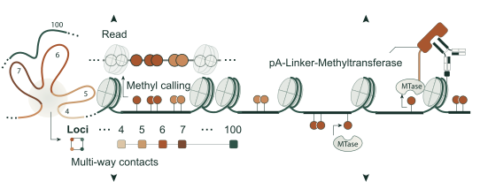

Tianyuan Liu
PhD candidate in bioinformatics. Long reads, single-molecule epigenomics, AI for interpretation.

Sequencing is easy now. Deciding which results are real — and what they mean — is not. I build the controls for the first half and the AI for the second.
Direct DNA methylation detectionMapping protein–DNA interaction

3D chromosome interactionChromatin accessibility profiling
One native molecule, four assays at once. Liu & Conesa,
Profiling the epigenome using long-read sequencing, Nature Genetics 57, 27–41 (2025).
Recent
July 2026
PaintOmics AI released.
July 2026
SQANTI-epi presented in the HiTSeq track at ISMB 2026, Washington DC.
July 2026
Cardiff work out in BMC Genomics: tissue identity and cross-species transfer of a developmental programme.
June 2026
Taught at the VALT Summer Course in Long-read Bioinformatics, València.
April 2026
TUSCO published in Nature Communications.
Research
Measurement you can trust, chromatin from single molecules, AI that shows its evidence.
Publications
Nature Communications, Nature Genetics, Nature Reviews Genetics, Nucleic Acids Research.
Software
SQANTI-epi, TUSCO, TELLME, PaintOmics AI, SQANTI3, MirCure.
Talks & teaching
ISMB, ECCB and LRUA; two summer courses; the longTREC doctoral network.
Elsewhere
Five cities, two languages, and the road.